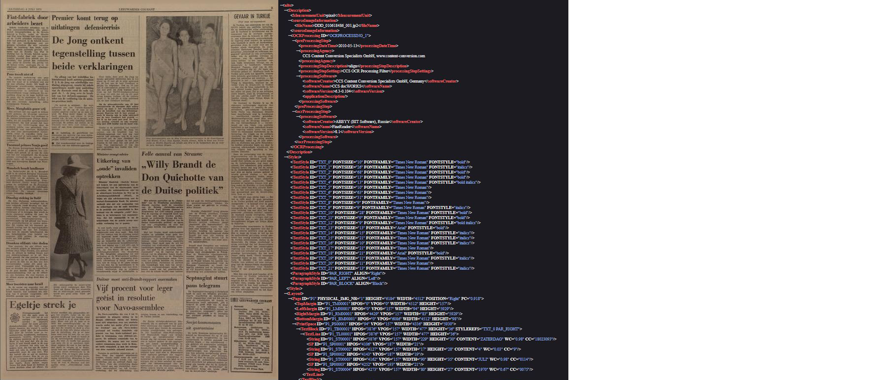
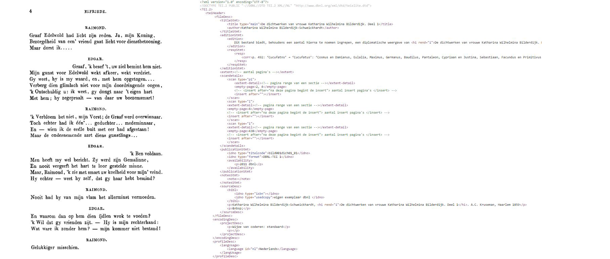

6. Introduction to the Alto/Didle, TEI and Page format
Contents
6. Introduction to the Alto/Didle, TEI and Page format¶
Although XML is a structured way to store data, the structuring itself is left to the user. This means that there is not one style or format of XML. This has led to a high variety of different formats and styles of storing data and information with XML. To battle this, multiple standards have been developed. These standards offer a guideline or framework for developers to store data.
In humanities research multiple standards are in use. In this chapter we will shortly describe some of the standards that are commonly used within the KB and other digital heritage insitutions, and will be used in this workshop.
Alto¶
ALTO (Analyzed Layout and Text Object) is an open XML Schema developed by the EU-funded project called METAe. The standard was developed for the description of text OCR and layout information of pages for digitized material. The goal of this standard was to describe the layout and text in such a way that it would enable the reconstruction of the original appearance. ALTO is often used with a metadata encoding file for the description of the whole digitized object and for creating references across mulitple ALTO files, such as reading order description. Commenly used files are Didl and METS. The ALTO standard is hosted by the Library of Congress (USA) and maintained by the Editorial Board initialized at the same time.
Within the KB, Alto is the format that is used for most of the digital heritage content. All content of books, periodicals and newspapers on Delpher.nl (the websites that stores the largest part of the digital hertige collection of the KB) is digitized in the Alto format, with a corresponding Didl xml file that containts the metadata. Within the MPEG-21 framework, a Digital Item is defined as a structured digital object with a standard representation, identification, and description.
An illustration of a newspaper page and (snippits of) its corresponding Alto and Didle file.

TEI¶
The Text Encoding Initiative (TEI) is a non-profit consortium which collectively develops and maintains a standard for the representation of texts in digital form. They have developed a set of Guidelines which specify encoding methods for machine-readable texts, mostly focused on the humanities, social sciences and linguistics. The TEI Guidelines are widely used by libraries, museums, publishers, and individual scholars to present texts for online research, teaching, and preservation.
The TEI Consortium is a non-profit membership organization composed of academic institutions, research projects, and individual scholars from around the world.
At the KB, the TEI format is used to store the OCR content of the DBNL (Digital Library for Dutch Literature). The content of the DBNL is all manually reviewed, providing an accuracy of 99%. The TEI format was chosen for the DBNL collection, as it is more flexible and can be richer annotated than the Alto xml formats. In the TEI format, content can be divided into chapters, parts can be marked as poems, and annotations can be easily added.
Whilst a beneift of the TEI format is the richness of metadata that can be added, a downside is that it is harder to automatically retreive informations from such files. Before extracting TEI files with automated scripts, it is always a good habit to check whether the specific TEI formats are all comparable.
An illustration of a book page and a snippit of its corresponding TEI file:

PAGE¶
PAGE has been designed to support the individual stages of the workflow of document image analysis methods (from document image enhancement to layout analysis to OCR) and their evaluation. PAGE is an image representation framework that not only records layout structure and page content, but information on image characteristics such as image borders, distortions and corresponding corrections, etc. It is used extensively in public contemporary and historical ground-truthed datasets and in the ICDAR Page Segmentation competition series.